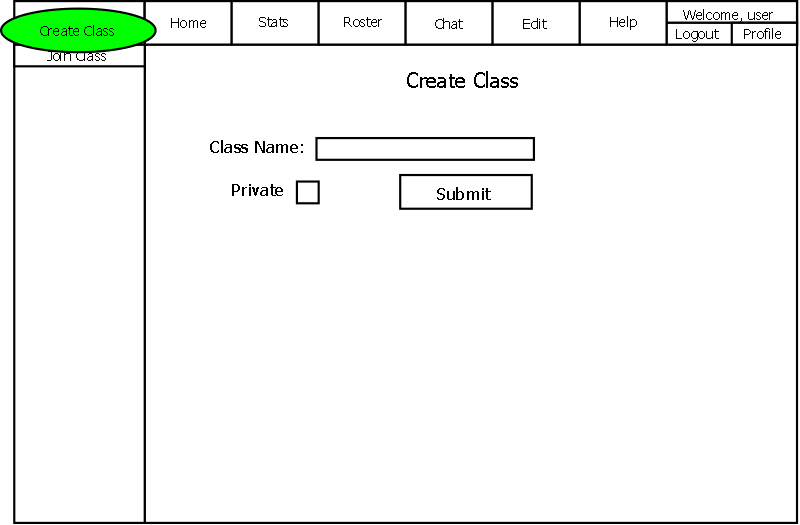

2.3.1.1 Creating a new Class
The "Create Class" button is only visible to instructors.
Classes are how lessons are grouped together for an insructor to manage.
A class is always the top folder in a directory, and anything within the class
is a lesson or quiz.
For an instructor to add a new class, he or she clicks on the "Create Class" button
located in the Navigation bar. The following screen is shown and once
completed, a new class is created.

Figure 2.3.1-1
"Class Name" will take in the name of the class from the instructor. The "Private"
checkbox gives power to the instructor to only allow certain student users to
access the class lessons.
Once the instructor has entered the class name, they can submit their class.
Once submitted, The instructor is shown a page edit screen of the main
page of the class(More information can be found in "Editing Lessons"). The
class will also be added to their navigation bar and the instructor will then
be able to create lessons for that class.
Prev: [none]
| Next: creating lessons
| Up: lesson manager
| Top: index